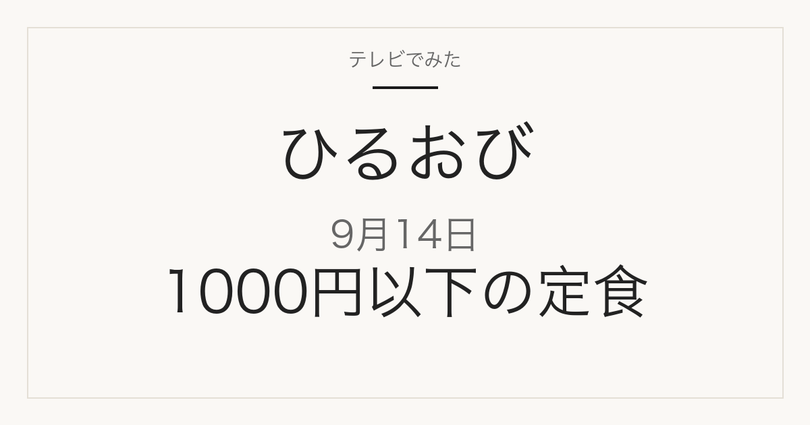

この記事には広告・アフィリエイトリンクが含まれる場合があります。
2026年9月14日（月）放送
ひるおび
都心の1000円以下定食
コスパ最強！都心の1000円以下定食と東京駅直結の新名所から中継
このページは、TBSが放送前に公表した番組情報をまとめたものです。店名・住所・価格は公式に発表されていません。放送で実際にどの店が紹介されたかどうかは確認できていません。
放送前に公表されていた内容を見る
特集概要
都心で1000円以下の定食と、東京駅直結の新名所
放送前の公式情報のみ
TBSの番組情報によると、この回のグルメ企画は2本立てでした。店名・住所・価格はいずれも記載がありません。
- 都心の1000円以下定食 — 穴場の定食が続々。番組表には名店のレシピを継承した店、病みつきになるからし焼、丸の内の揚げたて天ぷらが挙がっていました
- 東京駅直結の新名所から中継 — 番組表の表記は「トフロム八重洲タワー」。ミシュランの和食と極上寿司を取り上げる、と記載されていました
このほか最新ニュースを扱う、と記載されていました。
出典はTBSの2026年9月14日 ひるおび放送回ページ（2026年9月15日再確認）です。放送前に公表された情報のため、実際の放送内容とは異なる場合があります。
見たあとに
気になった定食の店を探すには
都心の定食は、店名と最寄り駅さえ分かれば行けます。ただ放送中は店名が一瞬で流れてしまい、あとから思い出せないことがよくあります。
この回について、ひるおびの番組公式サイトには放送後に内容をまとめたページがありません。そのため当サイトでも、紹介された店名・料理名・価格は載せていません。手がかりは番組が挙げていた「名店のレシピを継承した店」「病みつきになるからし焼」「丸の内の揚げたて天ぷら」という3つの特徴と、中継先のトフロム八重洲タワー（東京駅直結）の2つです。
載せるのは、番組公式か店舗の公式情報で確認できたものだけです。SNSの投稿だけを根拠にした断定はしません。
出演
この回の出演者
- 司会 — 恵俊彰
- コメンテーター — 八代英輝、土屋礼央、関根麻里
- TBSアナウンサー — 江藤愛、新タ悦男、小林由未子、小沢光葵
TBSの2026年9月14日 ひるおび放送回ページの出演者欄によります。恵さんの司会と八代さんのコメンテーターは番組公式サイトの記載です。
出典
TBS「ひるおび【コスパ最強！都心の1000円以下定食！▼東京駅直結の新名所から中継】」放送回ページ（内容・出演者の出典）
当サイトは番組公式サイトではありません。このページは放送前に公表された公式情報をもとにしており、放送された内容を確認して書いたものではありません。